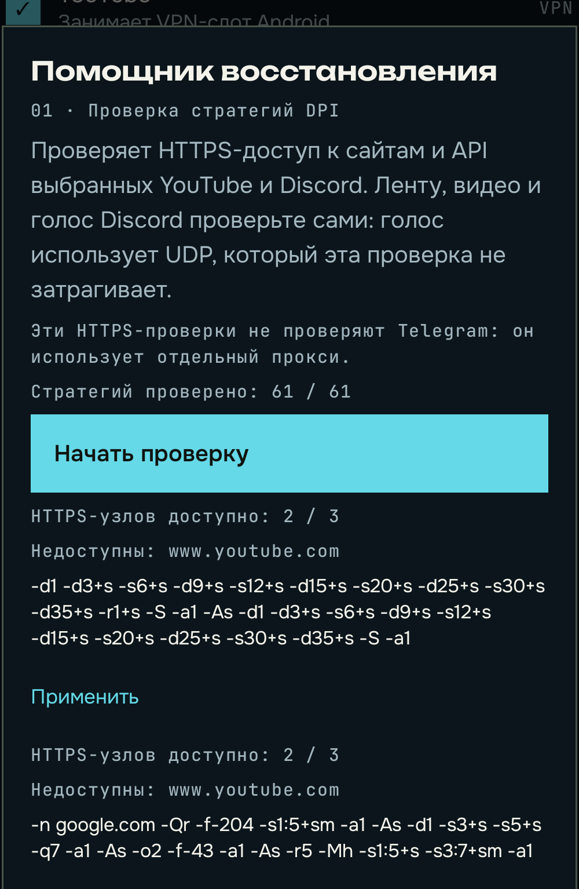

ByeBye TGWS Proxy
Автоподбор DPI
Проверка
DPI-стратегий
Помощник проверяет стратегии на HTTPS-узлах выбранных сервисов. Числа на снимке относятся к одному прогону.

Автоподбор DPI
Помощник проверяет стратегии на HTTPS-узлах выбранных сервисов. Числа на снимке относятся к одному прогону.
